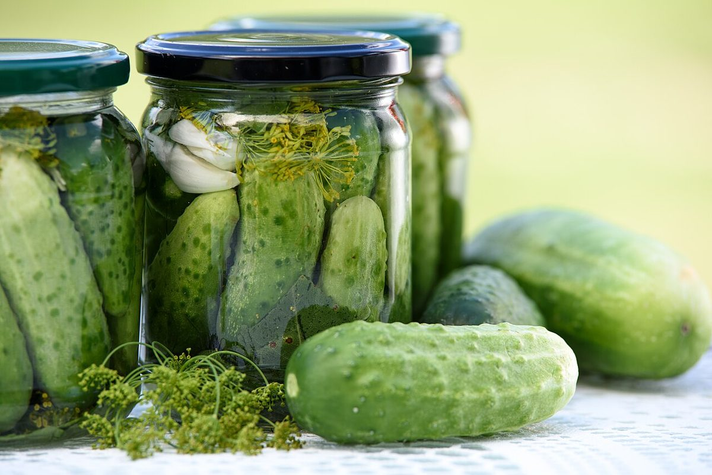
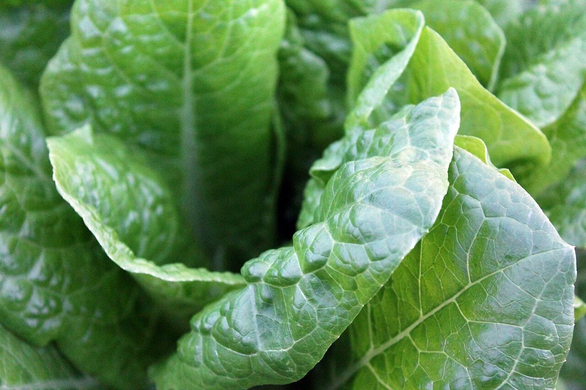

#400 / 店のこと
店のこと
確認できている基本情報と、この試作サイトについて。
#400基本情報
| 屋号 | サンドマニア |
|---|---|
| 業種 | ベーカリー(サンドイッチ系) |
| 所在地 | 〒031-0073 青森県八戸市売市２丁目２−２５ |
| 電話 | なし |
| SNS | |
| こだわり・沿革 | 準備中 |
お店のこだわりや歩みは、ご提供いただいた内容をもとに掲載します。

#400この試作サイトについて
お店の名前の「サンド」から、制作側が紙やすり(サンドペーパー)を連想してデザインしました。粗い番手から細かい番手へ向かう並びを、五つのページに当てはめています。
これは制作側の連想で、お店の理念・由来とは無関係です。色や構成、文章は、貴店のご意向にあわせて作り直せます。
写真はフリー素材のイメージで、実際の店内・商品の写真は貴店ご提供のものに差し替えます。

